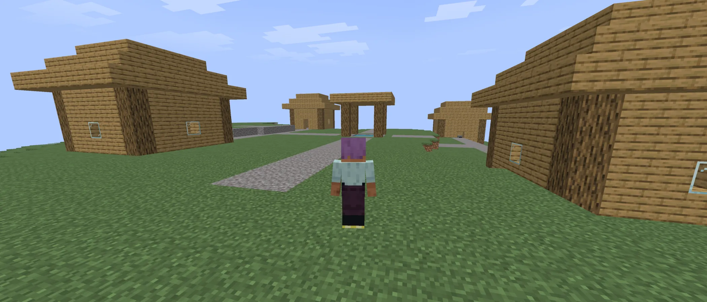

Vib Studios
A Minecraft server
written entirely by AI
One prompt at a time. It connects, generates terrain, takes clients from Minecraft 1.8 through 26.1.2 (excluding 1.16, 1.16.1 and 1.19.3), and now has a real survival loop.

01 — vib-MC
A survival loop,
one prompt at a time
Fourteen packages, zero humans. The whole thing was coaxed into existence with prompts, then patched with more prompts. What follows is straight from the README, with no marketing layer in between.
What actually works
- Actually starts
- Handshake, login, spawn — from Minecraft 1.8 to 26.1.2, minus 1.16, 1.16.1 and 1.19.3.
- People can join
- One prompt at a time, and now with a real survival loop that persists across restarts.
- Terrain generates
- Procedural, seeded, deterministic. Biomes, caves, ores, trees, a village at spawn.
- Plugin API
- The interface exists. Build a plugin in the browser and it compiles to Java.
- Mobs
- None yet. Players are the only thing the server sends.
- Nether & End
- Both real, both reachable. Build the portal yourself.
Download v0.0.7
Java 8 or newer. One jar, no installer and no control panel: drop it in a folder, run it, and point a client at port 25565.
- Release
- v0.0.7
- Published
- 2026-08-28
- Size
- 10.4 MB
- Licence
- GPL-3.0
v0.0.7 is the current stable baseline.